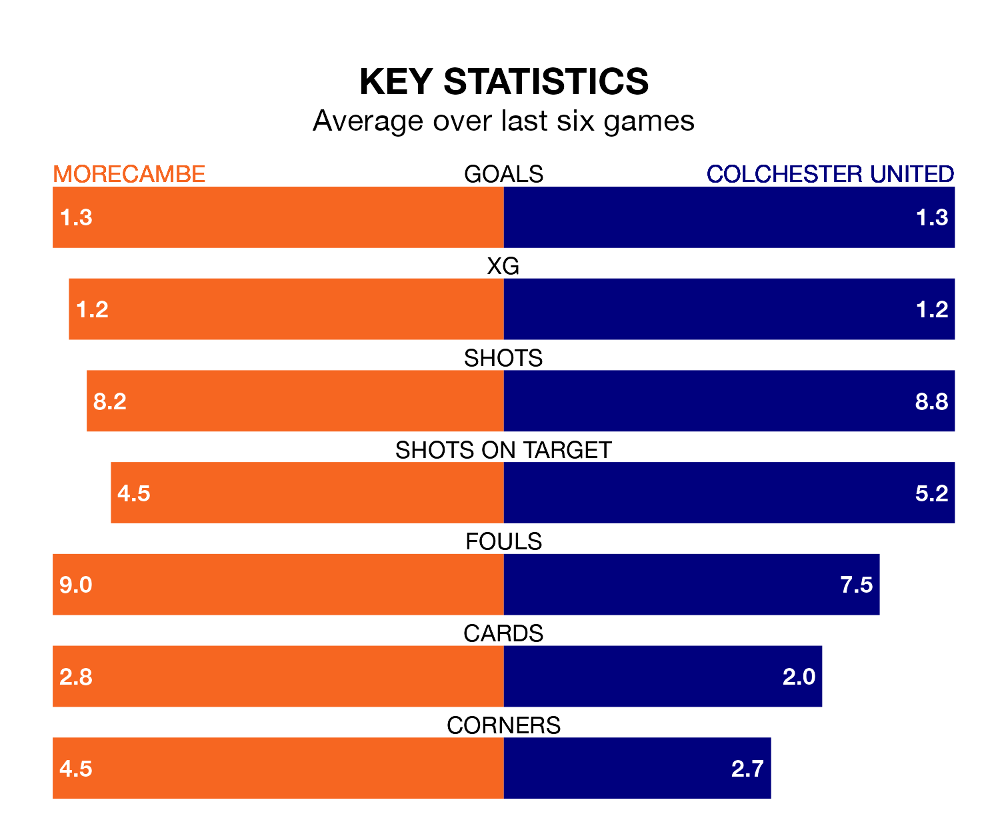

Colchester United travel to the Mazuma Stadium looking to secure a first win in six EFL League Two games against Morecambe on Saturday.
The U's have lost three and drawn two matches since they last earned three points – against Salford City on December 22.
They face a Morecambe side who have won one and drawn three over that time.
Colchester are 22nd in the table after 28 games, of which they have won seven and drawn four, earning 25 points.
Morecambe are nine places ahead of United in 13th, with 10 wins and seven draws putting them on 37 points.
In the last 10 years, Morecambe and Colchester have played each other on 11 occasions. Morecambe won four of them, Colchester one, and they drew six times.
On average, the Shrimps scored 1.2 goals and the U's 0.6 in those matches.
Their last meeting was on October 7, when Morecambe won 3-1 away.
With 38 goals in 28 games so far this season, the U's are scoring at below the league average rate with 1.4 goals per game. And they are conceding more than average, letting in 55 goals at a rate of 2.0 per game.
The Shrimps, meanwhile, are average scorers, with 1.5 goals per game. They have conceded 1.7 goals per game.
In Michael Mellon, the hosts have one of the league's most on-form strikers so far this season. He has notched 13 goals in 22 appearances, to sit eighth in the scoring charts.
His goal rate of one every 134 minutes is quicker than that of Joseph Taylor, the away team's top scorer with a goal every 178 minutes, and a total of 11 goals in 25 games.
Morecambe's last match was on January 20, a 2-1 win against Milton Keynes Dons, with Charlie Brown and Jordan Michael Slew getting the goals for the Shrimps.
Colchester drew 1-1 with Bradford City last time out, on January 13, with Tom Hopper on the scoresheet.
Saturday's match will be refereed by Daniel Middleton, who has taken charge of seven EFL League Two games so far this season, issuing one red card and booking 26 players. He has awarded one penalty.
He is yet to oversee a match featuring either Morecambe or Colchester this season.
Updated: 08:51 (UTC), 25/01/24